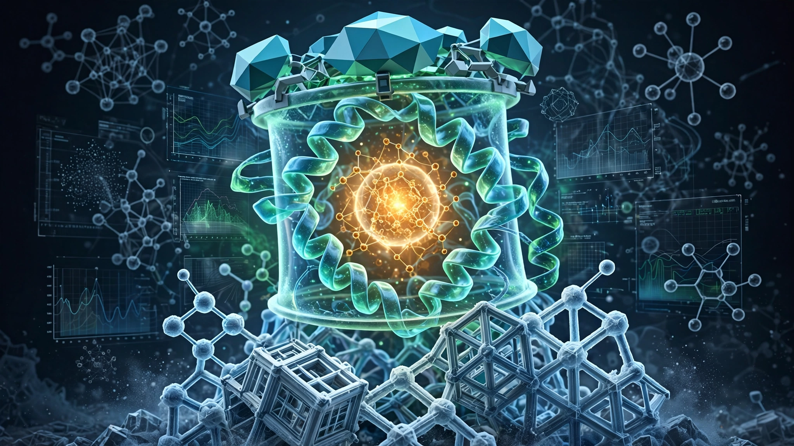

A Protein Shell With Zero Enzymatic Activity Became a Working Catalyst. It Cost $1,350 in Lab Work.
A Bayreuth team transformed completely inert de novo TIM barrel scaffolds into functional enzymes achieving 1,400 M⁻¹s⁻¹ catalytic efficiency in a single computational design round, with a 44% hit rate that beats every method starting from natural templates. We ran the cost-per-functional-enzyme math across four generations of the field.

Zero. That was the catalytic activity of the protein scaffolds Julian Beck and Birte Höcker's team at the University of Bayreuth started with. De novo TIM barrels designed entirely on computers, confirmed to fold correctly, producing beautiful crystallographic data but incapable of accelerating any chemical reaction whatsoever. By the time their paper landed in Nature Chemical Biology on June 27, four of those inert shells had been converted into functional Kemp eliminases at 1,400 M⁻¹s⁻¹ catalytic efficiency at physiological pH, rivaling the first generation of computationally designed enzymes while starting from a far harder position.
What sets this apart is not the absolute catalytic rate but where the starting line was. Every previous method that achieved comparable numbers began with fragments of natural proteins, borrowing structural elements that evolution had already refined over billions of years. CANVAS, the workflow Beck and Höcker introduced with collaborator Roberto Chica at the University of Ottawa, starts from scaffolds that have never catalyzed anything, and we ran cost numbers that do not appear in any of these papers, numbers that invert conventional wisdom about what it costs to build a catalyst from scratch.
What CANVAS does differently
CANVAS stands for "customizing amino acid networks for virtual active-site scaffolding." Its core move is counterintuitive: take a minimal de novo TIM barrel, a protein fold found in roughly 10% of all known enzymes, and bolt on a computationally designed lid that creates an active-site pocket where none existed before.
Five AI and computational tools chain together in sequence. Triad places an idealized catalytic arrangement onto the bare scaffold. RFdiffusion designs a custom peptide lid to bridge between the scaffold and a second catalytic residue. ProteinMPNN optimizes the lid's amino acid sequence, AlphaFold2 predicts the resulting structure, and Triad repacks the active site around the transition state. A final Boltz-2 filter checks whether each design's predicted ligand-binding pose matches the intended catalytic geometry.
Nine designs emerged from this pipeline, and four expressed as soluble, monomeric proteins in E. coli with melting temperatures above 80°C. All four catalyzed the Kemp elimination, the benchmark non-natural reaction that has served as the proving ground for computational enzyme design since 2008.
The numbers that matter
KempTIM1, the standout, hit a catalytic efficiency (kcat/KM) of 1,400 M⁻¹s⁻¹ at pH 7, with 4.2 turnovers per second, rising to 21,000 M⁻¹s⁻¹ at its optimal pH of 10. Both represent 10 to 14-fold improvements over comparable first-round de novo Kemp eliminases from competing workflows.
Crystal structures confirmed designs fold as intended, with KempTIM1 deviating from its computational model by 0.68 Å root-mean-square. A cocrystal with a transition-state analog showed the exact hydrogen bonds the design specified.
CANVAS designs are also evolvable, as demonstrated when KempTIM4, a variant at just 19 M⁻¹s⁻¹, was subjected to ensemble-based computational redesign using crystallographic data, yielding KempTIM4b at 3,100 M⁻¹s⁻¹ (pH 7) and 32,000 M⁻¹s⁻¹ (pH 10), an improvement exceeding 400-fold achieved through pure computation with no directed evolution or random mutagenesis involved.
What it costs to build an enzyme from nothing
We estimated experimental cost per designed variant using figures consistent with academic protein biochemistry: gene synthesis ($50 to $150), E. coli expression and purification ($50 to $80), kinetic assays ($5 to $10). Computational costs are negligible on standard GPU clusters. Using $150 as a conservative per-design midpoint, we calculated cost-per-functional-enzyme across four generations of computational Kemp eliminase design.
| Method | Year | Starting scaffold | Designs tested | Active enzymes | Hit rate | Best first-round kcat/KM | Est. cost per active enzyme |
|---|---|---|---|---|---|---|---|
| Rosetta theozyme | 2008 | Natural TIM barrels | ~59 | ~8 | ~14% | ~160 M⁻¹s⁻¹ | ~$1,106 |
| Weizmann complete design | 2025 | Natural TIM barrel fragments | 73 | 20 | 27% | 12,700 M⁻¹s⁻¹ | ~$548 |
| RFdiffusion2 | 2025 | Generated new folds | 192 (2 rounds) | 4 highly active | ~2%* | 53,000 M⁻¹s⁻¹† | ~$7,200 |
| CANVAS | 2026 | De novo (zero activity) | 9 | 4 | 44% | 1,400 M⁻¹s⁻¹ | ~$338 |
*RFdiffusion2 hit rate reflects "highly active" enzymes (>10,000 M⁻¹s⁻¹); total active count was higher. †Metallohydrolase, not Kemp elimination; included for completeness. All cost estimates use $150/design midpoint for gene synthesis, expression, purification, and assay. Academic labs in low-cost settings may halve these figures; contract research organizations could triple them.
That pattern is striking. CANVAS achieves the lowest cost per functional enzyme ($338) from the hardest starting position, scaffolds with zero catalytic history, and its 44% hit rate beats every method starting from natural templates, including Fleishman's Weizmann team at 27% from natural TIM barrel fragments and the earlier Rosetta designs at roughly 14%.
Three caveats apply. Reactions differ, since Kemp elimination is a single-step proton transfer while metallohydrolysis involves metal-activated water, making cross-method efficiency comparisons biochemically imprecise. Fleishman's Des27 at 12,700 M⁻¹s⁻¹ and its variant Des27.7 at 123,000 M⁻¹s⁻¹ dramatically outperform CANVAS in absolute efficiency; when maximum speed matters more than minimum cost, natural-template methods win. And our per-design cost estimates are approximate because published papers rarely itemize expenditures.
Why blank canvases matter for the $8 billion enzyme industry
Global industrial enzymes reached $7.9 billion in 2025, projected to grow at roughly 6% annually to $12 to $15 billion by 2036, and nearly every commercial enzyme descends from a natural protein improved through directed evolution campaigns costing millions over years.
CANVAS opens a different path. Natural TIM barrels support catalysis across six of seven enzyme classes, but their existing lid architectures constrain which reactions they accelerate. When a target reaction requires an active-site geometry that no natural TIM barrel provides, designers have historically been stuck. CANVAS decouples lid design from natural precedent entirely. Any minimal TIM barrel scaffold can receive a bespoke lid tailored to a specific reaction's geometric and chemical requirements.
Consider a company needing an enzyme for a non-natural reaction where no known biocatalyst exists, routine in drug intermediate synthesis. Under conventional approaches, screening hundreds of thousands of natural variants costs $500,000 to $2 million and produces hits maybe 0.01% of the time. CANVAS produced four functional enzymes from nine designs for roughly $1,350.
The strongest case against celebration
CANVAS enzymes are not yet competitive with the best designed catalysts. Fleishman's Des27.7 catalyzes Kemp elimination at 123,000 M⁻¹s⁻¹, which is 88 times faster than CANVAS at physiological pH, and NMR-guided evolution of earlier de novo Kemp eliminases has pushed catalytic efficiencies to 430,000 M⁻¹s⁻¹, matching average natural enzymes.
More fundamentally, CANVAS has been demonstrated on one reaction, and Kemp elimination is mechanistically simple: a single proton transfer. Natural enzymes employ multiple catalytic residues, metal cofactors, and conformational dynamics that current lid-design tools may struggle to reproduce. Generalizability beyond TIM barrels is also untested.
What you can do with this
If you run an enzyme engineering program, CANVAS expands your design space immediately. Beck et al.'s paper uses publicly available tools: RFdiffusion, ProteinMPNN, AlphaFold2, Boltz-2 (all open source), and Triad (commercial, academic licenses available). Nine CANVAS variants can be designed and tested in a week for under $1,500.
For investors: watch how quickly CANVAS improves. KempTIM4b's 400-fold jump through purely computational redesign suggests substantial headroom. If subsequent rounds close even half the gap to Fleishman's benchmark, CANVAS would offer both the cheapest path to first function and competitive absolute performance. Fleishman's workflow, RFdiffusion2, and CANVAS are complementary tools making custom enzyme design routine rather than heroic.
For everyone else: enzymes underpin a $7.9 billion industry because evolution produced catalysts useful for cheese, detergent, and beer. Computational design now builds catalysts evolution never imagined, from scaffolds that never existed in any organism. A blank canvas is no longer a limitation. It is the starting point.